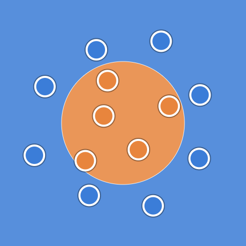

Kapitel 1
Ein erstes Modell
In diesem Kapitel wollen wir ein Programm entwickeln, das zwischen zwei Sorten von Punkten unterscheiden kann. Wir beginnen mit einem einzelnen Neuron und bauen dann aus Schichten von Neuronen ein kleines Netz, das seine Gewichte selbst findet.
Zwei Sorten von Punkten
Gegeben sei eine Ebene mit den Koordinaten
und , jeweils von -6 bis +6. In diese Ebene setzen
wir Punkte zweier Sorten: orange und blau. In den Programmen wird die
Sorte eines Punkts durch eine Zahl dargestellt: 1
für orange und -1 für blau.
Ein Modell ist eine Funktion, die aus den Koordinaten und eines Orts in dieser Ebene eine Vermutung über die Sorte eines Punkts an diesem Ort berechnet, einen Wert zwischen -1 und +1. Bei -1 ist sich das Modell sicher, dass dort ein blauer Punkt liegt, bei +1 sagt es mit Sicherheit einen orangen voraus. Werte dazwischen drücken Unsicherheit aus: Das Vorzeichen sagt, welche Sorte das Modell eher vermutet, und je näher der Wert an 0 liegt, desto unsicherer ist es; bei 0 kann es sich nicht entscheiden.
Eine solche Funktion könnten wir beliebig formulieren, etwa

Sie ist am rechten Rand +1, am linken -1 und auf der senkrechten Achse 0: Rechts vermutet sie orange, links blau, und je näher zur Mitte, desto unsicherer ist sie. Oder

Sie ist im Mittelpunkt +1, in den vier Ecken −1, denn dort ist , und auf dem Kreis mit dem Radius 6 um den Mittelpunkt, wo ist, ist sie 0. Ob eine solche Funktion die Sorte der Punkte gut vorhersagen kann, hängt davon ab, wie sie liegen: Die erste passt zu Punkten, die rechts orange und links blau sind, die zweite zu einer orangen Scheibe in einem blauen Ring.
Maschinelles Lernen hingegen denkt sich die Formel nicht aus. Es legt nur ihre allgemeine Form fest, eine Formel mit offenen Zahlen, den Parametern. Im zweiten Beispiel könnte die 36 eine solche offene Zahl sein, , und gäbe an, wie groß die orange Scheibe ist; wo die Formel dabei unter −1 fällt, zählt sie als −1. Welche Werte die Parameter bekommen, findet ein Programm aus Beispielen heraus, aus Punkten, deren Sorte bekannt ist. Dieses Finden nennt dieses Buch Lernen, und eine Funktion mit gefundenen Parametern ein trainiertes Modell.
Ein Neuron
Die einfachste Form einer solchen Funktion ist ein Neuron. Es multipliziert jede seiner Eingaben mit einer eigenen Zahl, seinem Gewicht, zählt alles zusammen und addiert noch eine Zahl, seinen Bias:
Das Ergebnis heißt die gewichtete Summe des Neurons. Wo sie positiv ist, vermutet das Neuron orange, wo sie negativ ist, blau. Die Punkte, an denen genau 0 ist, bilden eine Gerade; ein Neuron teilt die Ebene also durch eine Gerade: Die Gewichte drehen sie, der Bias verschiebt sie.
Nun wollen wir versuchen, das Neuron so anzupassen, dass es die Farbe von sechs Punkten, die wir willkürlich in der Ebene verteilen, möglichst gut bestimmen kann: drei orange und drei blaue. Wir beginnen mit den Gewichten 1 und 1 und dem Bias 0:

Fünf der sechs liegen auf der richtigen Seite; der eingekreiste ist orange, liegt aber unterhalb der Geraden. Mit dreht sich die Gerade zur senkrechten Achse, und alle sechs stimmen:

Die Gewichte und den Bias schrittweise zu verändern, bis die Vermutungen stimmen, ist das Wesen dessen, was wir als Lernen bezeichnen wollen.
Wie falsch
Um die Gewichte von selbst zu ändern, braucht ein Programm ein Maß dafür, wie falsch das Neuron liegt. Dieses Maß ist eine Zahl, die kleiner wird, wenn das Neuron besser wird. Die falschen Vermutungen zu zählen taugt dafür nicht: Eine kleine Änderung eines Gewichts ändert meist gar keine Vermutung, also sagt die Anzahl nicht, in welche Richtung zu drehen ist.
Deshalb bilden wir die gewichtete Summe zuerst mit einer glatten Funktion auf eine Zahl zwischen −1 und 1 ab, hier mit dem Tangens hyperbolicus:

Mit dieser Funktion kann das Modell so antworten, wie es zu Beginn des Kapitels verlangt war: nahe +1 oder -1, wo es sich sicher ist, nahe 0, wo nicht. Eine solche Funktion wollen wir die Aktivierungsfunktion des Neurons nennen und seine Antwort für einen bestimmten Punkt der Ebene. Jetzt lässt sich die Antwort mit der Sorte vergleichen, die der Punkt wirklich hat:
ist der Fehler eines Punkts (englisch loss): 0, wo die Antwort genau die Sorte ist, größer, je weiter sie davon weg ist, und jede kleine Änderung eines Gewichts ändert ihn ein wenig. Der Mittelwert der Fehler aller Punkte ist der Fehler des Neurons, und das ist das Maß, das wir gesucht haben.
Der Tangens hyperbolicus ist nicht die einzige mögliche Aktivierungsfunktion. In großen Netzen nimmt man heute meist eine noch einfachere Funktion, ReLU: , also selbst, wo positiv ist, sonst 0. Ihre Steigung ist für positive immer 1, während die von tanh weit außen fast 0 wird. Was das beim Lernen ausmacht, zeigt sich im nächsten Abschnitt.
Bergab
Der Fehler unseres Neurons ist also eine Funktion der drei Werte , und . Nun wollen wir die Werte finden, für die er möglichst klein wird. Alle Kombinationen auszuprobieren geht nicht: Jeder der drei Werte kann jede Zahl sein, es gibt also unendlich viele. Selbst wenn wir für jeden Wert nur 100 Zahlen durchprobierten, wären das , eine Million Kombinationen, und für jede müssten wir den Fehler über alle Punkte ausrechnen. Für drei Werte schafft ein Rechner das noch, aber schon das Netz für XOR, das wir später bauen, hat 13 Zahlen und damit Kombinationen, und große Netze haben Millionen von Gewichten. Deshalb beginnen wir mit irgendwelchen Werten und bewegen uns von dort Schritt für Schritt in die Richtung, in der der Fehler am stärksten abnimmt, mit allen drei Werten zugleich. Welche Richtung das ist, lässt sich für jeden Wert einzeln ablesen: Wie stark ändert sich der Fehler, wenn sich der Wert ein wenig ändert? Das ist die partielle Ableitung des Fehlers nach diesem Wert, für geschrieben . Partiell heißt sie, weil sich nur dieser eine Wert ändert und die anderen festgehalten werden; das runde statt eines zeigt das an.
Der Fehler hängt nicht direkt von ab. Er hängt von der Antwort ab, die Antwort von der Summe und die Summe von . Jedes Glied dieser Kette hat eine Ableitung, die sich leicht ausrechnen lässt:
Wie stark ändert sich der Fehler, wenn sich die Antwort ändert? , die Ableitung von .
Wie stark ändert sich die Antwort, wenn sich die Summe ändert? , die Ableitung von tanh.
Wie stark ändert sich die Summe, wenn sich ändert? , denn wird mit multipliziert.
Die Kettenregel sagt: Die Ableitung der ganzen Kette ist das Produkt der Ableitungen ihrer Glieder.
Für ist der letzte Faktor , für den Bias 1. Über alle Punkte zusammengezählt und durch ihre Anzahl geteilt, sind diese partiellen Ableitungen der Gradient: die Richtung, in der der Fehler am schnellsten steigt. Ein Schritt des Gradientenabstiegs bewegt jeden der drei Werte ein wenig in die andere Richtung,
wobei die kleine Zahl die Lernrate ist.
Und wann hört man auf? Wenn der Fehler klein genug ist, oder wenn er kaum noch sinkt. Die Seiten dieses Kapitels hören auf, sobald der Fehler unter 0,02 liegt oder in hundert Schritten um weniger als 0,0001 gesunken ist. Eine solche Regel heißt Abbruchkriterium.
Probier auch die Startwerte (die Seite mit diesen Werten): Dann rührt sich das Neuron kaum, und nach hundert Schritten hält die Seite an, weil der Fehler nicht mehr sinkt. Fast alle Punkte liegen auf der falschen Seite, und zwar weit weg von der Geraden, wo tanh fast ±1 ist und kaum noch steigt. Weil der Faktor dort fast 0 ist, ist es auch der Gradient: Ein Neuron, das sich sicher irrt, lernt kaum. Man nennt das Sättigung, und deshalb beginnt man mit kleinen Gewichten.
Bessere Eingaben
Unser Neuron teilt die Ebene durch eine Gerade. Manche Anordnungen von Punkten kann man aber nicht durch eine Gerade teilen, beispielsweise eine Scheibe oranger Punkte in einem Ring blauer: Jede Gerade hat dann Orange und Blau auf beiden Seiten.
Dem Neuron fehlt dabei nicht die Rechenkunst, sondern der richtige Blick auf die Punkte. Geben wir ihm statt und deren Quadrate als Eingaben:
Mit und etwa ist genau dort 0, wo ist, auf dem Kreis mit dem Radius 3 um den Mittelpunkt. Innen ist positiv, außen negativ:

Warum kann das Neuron das plötzlich? Nennen wir seine neuen Eingaben und . Dann ist wieder eine Gerade, nur nicht in der Ebene von und , sondern in der von und . Trägt man die Punkte dort ein, liegt die Scheibe nahe am Nullpunkt und der Ring weiter draußen, und eine Gerade trennt sie:

Das Neuron zieht also noch immer eine Gerade, aber in den Eingaben, die es bekommt; auf der Ebene der Punkte wird daraus ein Kreis. Auszuwählen, was ein Modell sieht, heißt Feature Engineering, und gute Eingaben können ein schweres Problem leicht machen.


Rückwärtsrechnung
Wie lernt ein verborgenes Neuron? Seine Gewichte sind so weit vom Fehler entfernt wie nur möglich, hinter dem Ausgabeneuron. Die Kettenregel funktioniert trotzdem, mit einer Kette, die ein Glied länger ist. Der Kniff liegt in der Reihenfolge, in der sie gerechnet wird.
Zuerst wird alles vorwärts gerechnet, wie bisher: die Antwort jedes verborgenen Neurons, dann die Summe der Ausgabe und ihre Antwort . Dann rückwärts. Der Anteil des Ausgabeneurons am Fehler, der Fehler nach seiner Summe, ist das bekannte
und die Ableitungen seiner Gewichte folgen daraus wie bei einem einzelnen Neuron: für das Gewicht , das das verborgene Neuron liest. Das verborgene Neuron erreicht den Fehler über dieses Gewicht, also ist die Steigung nach seiner Antwort , und durch sein eigenes tanh wird sein Anteil am Fehler zu
Von da an sind seine Gewichte wieder die eines einzelnen Neurons: , und für seinen Bias. Der Fehler wird Schicht für Schicht rückwärts durch das Netz gereicht, der Anteil jeder Schicht aus dem Anteil der Schicht nach ihr berechnet. Das ist die Rückwärtsrechnung (englisch backpropagation), und sie ist das ganze Geheimnis, wie Netze jeder Tiefe lernen.
Die verborgenen Neuronen auf der Seite beginnen mit Absicht bei verschiedenen Gewichten. Hätten alle gleich begonnen, würden sie gleich antworten, in jedem Schritt denselben Gradienten bekommen und für immer gleich bleiben, drei Kopien einer Geraden. Deshalb beginnt ein Netz meist mit zufälligen Gewichten.
Mehr braucht ein Netz zum Lernen nicht, ganz gleich, wie viele Schichten es hat: vorwärts rechnen, den Fehler rückwärts verteilen, jedes Gewicht ein Stück gegen seinen Gradienten schieben.
Das Spielfeld
Die Netze in unseren Kästen waren klein und für je eine Aufgabe gebaut. Das Spielfeld ist eine Seite, auf der du ein Netz selbst zusammenstellst und ihm beim Lernen zusiehst. Du wählst die Punkte, die Eingaben, wie viele verborgene Schichten es hat und wie viele Neuronen in jeder, und wie es lernt. Gerechnet wird genau so, wie es die letzten Abschnitte hergeleitet haben. Oben auf der Seite liegt eine Leiste mit den Knöpfen. Darunter stehen nebeneinander drei Teile, von links nach rechts die Daten, das Netz und die Ausgabe; auf einem schmalen Bildschirm stehen sie untereinander. Das Bild zeigt die Seite mit der Spirale, nach gut 2000 Schritten.

- Die Leiste
Pause hält das Netz an; derselbe Knopf heißt dann Lernen und lässt es weiterlernen. Solange es angehalten ist, macht Ein Schritt genau einen Schritt des Gradientenabstiegs über alle Trainingspunkte. Neu beginnen gibt dem Netz neue zufällige Gewichte und behält die Punkte. Daneben zählt die Seite die Schritte seit dem Beginn.
Die Lernrate ist die aus dem Abschnitt „Bergab“, wählbar von 0,001 bis 3. Unter Aktivierungsfunktion stehen vier zur Wahl, für die Neuronen der verborgenen Schichten: der Tangens hyperbolicus, ReLU, die Sigmoidfunktion , die zwischen 0 und 1 verläuft statt zwischen −1 und +1, und keine. Ohne Aktivierungsfunktion gibt jedes verborgene Neuron seine gewichtete Summe einfach weiter, und das ganze Netz zieht, wie viele Schichten es auch hat, nur eine Gerade. Das Ausgabeneuron antwortet immer mit dem Tangens hyperbolicus. Die Regularisierung (L2) erklärt der nächste Abschnitt.
Das Tempo sagt, wie viele Schritte das Netz zwischen zwei Bildern macht, in fünf Stufen von 1 bis 100. Die Seite zeichnet höchstens alle 30 Millisekunden ein Bild.
- Die Daten
Fünf kleine Bilder wählen die Punkte: Kreis, eine Scheibe in einem Ring; XOR, die vier Viertel der Ebene, die Sorte nach dem Vorzeichen von ; Wolken, zwei Haufen um und ; Spirale, zwei ineinander gewundene Arme; und Eigene, eine leere Ebene. In sie setzt du selbst Punkte, mit einem Klick einen orangen, mit Umschalt-Klick oder Rechtsklick einen blauen. Für die anderen vier zieht die Seite 300 Punkte, zur Hälfte von jeder Sorte.
Der Regler Rauschen verschiebt jeden Punkt zufällig, bis zu 50 %, so dass die Sorten ineinander greifen; bei den Wolken macht er statt dessen die Haufen breiter. Neue Punkte zieht dieselbe Anordnung neu. Ein Wechsel der Daten tauscht nur die Punkte aus, das Netz lernt mit seinen bisherigen Gewichten weiter.
- Das Netz
Das Netz steht in Spalten, von links nach rechts in der Reihenfolge, in der gerechnet wird. Die erste Spalte sind die sieben möglichen Eingaben: , , , , , und . Die Quadrate kennst du aus dem Abschnitt „Bessere Eingaben“; neu sind die Sinus der beiden Koordinaten, die über die Ebene hin knapp zweimal auf und ab gehen. Ein Klick auf eine Eingabe gibt sie dem Netz oder nimmt sie ihm weg. Eine weggenommene ist blass und durchgestrichen, und eine bleibt immer.
Danach kommen die verborgenen Schichten, jede eine Spalte. Mit − und + über dem Netz nimmst du eine Schicht weg oder fügst eine hinzu, bis zu sechs; mit − und + über einer Spalte ein Neuron dieser Schicht, bis zu acht. Ohne verborgene Schicht ist das Netz ein einzelnes Neuron wie am Anfang des Kapitels. Die letzte Spalte ist das Ausgabeneuron.
Jedes Neuron, auch jede Eingabe, ist ein kleines Quadrat. Es zeigt, was das Neuron über der ganzen Ebene antwortet, orange, wo die Antwort positiv ist, blau, wo sie negativ ist, so wie unsere Bilder für XOR. Die Linien zwischen den Quadraten sind die Gewichte: orange positiv, blau negativ, je dicker, desto größer ihr Betrag. Auf jeder Linie läuft ein Licht von links nach rechts, umso schneller, je stärker das Gewicht ist. Ändert sich die Form des Netzes, seine Eingaben oder seine Aktivierungsfunktion, beginnt es mit neuen zufälligen Gewichten von vorn.
- Die Ausgabe
Oben stehen zwei Zahlen, der Fehler beim Training und der Fehler beim Test, darunter ihr Verlauf seit dem letzten Neubeginn: der Trainingsfehler durchgezogen, der Testfehler gestrichelt. Was Testpunkte sind, erklärt der nächste Abschnitt.
Das große Bild ist die Ebene, von −6 bis 6 in beiden Richtungen, mit allen Punkten. Unter ihnen liegt die Antwort des Ausgabeneurons an jeder Stelle, je kräftiger die Farbe, desto näher an +1 oder −1. Nur die Entscheidung zeigt statt dessen nur, auf welcher Seite der Null die Antwort liegt, und damit die Grenze, die das Netz zieht. Testpunkte zeigen blendet die umrandeten Punkte ein und aus.
Unter den drei Teilen sagt die Seite in wenigen Sätzen, was geschieht, und ganz unten lässt sich das Programm aufklappen, von dem der letzte Abschnitt dieses Kapitels handelt. Die Links in den Kästen stellen die Seite gleich passend ein. Was sie wählen, steht in der Adresse hinter dem #. Ohne solche Angaben beginnt die Seite mit dem Kreis, den Eingaben und und zwei verborgenen Schichten aus vier und zwei Neuronen.
Verallgemeinerung
Ein Modell, das seine Trainingspunkte kennt, nützt noch nichts. Die Frage ist, wie gut es Punkte errät, die es nie gesehen hat. Deshalb hält das Spielfeld die Hälfte seiner Punkte als Testpunkte zurück, umrandet gezeichnet: Das Netz lernt nie aus ihnen, und der Fehler über ihnen, der Testfehler, sagt, wie gut es verallgemeinert.
Wenn die Daten verrauscht sind und das Netz groß ist, gehen die beiden Fehler auseinander. Das Netz lernt die Trainingspunkte immer besser, das Rauschen eingeschlossen, und zieht Grenzen um einzelne verirrte Punkte; der Testfehler hört auf zu fallen und steigt. Das ist Überanpassung (englisch overfitting). Ein Mittel dagegen ist Regularisierung: ein zusätzlicher Fehler für große Gewichte, für jedes Gewicht. Seine Ableitung schrumpft jedes Gewicht in jedem Schritt ein wenig, und ein Netz mit kleineren Gewichten zieht glattere Grenzen.
Das Programm des Spielfelds
Die Seite führt ein einziges Scaly-Programm aus,
field.scaly, für WebAssembly gebaut. Es sind die
Programme dieses Kapitels, erwachsen geworden: alles, was die Seite
einstellen lässt, und die Rückwärtsrechnung wie im Abschnitt
„Rückwärtsrechnung“, nur in Schleifen über die Schichten statt
ausgeschrieben. Alles, was die Seite zeigt, hält es in einem Vektor
von Zahlen in seinem Speicher, den die Seite direkt liest, ohne
Kopie; das Bild der Antwort des Netzes über der Ebene ist ein
for über ihre 6400 Punkte, das Scaly von selbst
auf die Kerne des Rechners verteilt. Der Quelltext liegt
auf GitHub.
Alles, was dieses Kapitel von Hand hergeleitet hat, die Kettenregel durch jedes Glied und den Gradienten jedes Gewichts, kann auch ein Programm herleiten. Davon handeln die nächsten Kapitel: zuerst, wie Scaly viele Zahlen auf einmal hält, in Tensoren, dann ein Band, das die Rechnung vorwärts aufzeichnet und rückwärts abspielt, um jede Ableitung zu bekommen.